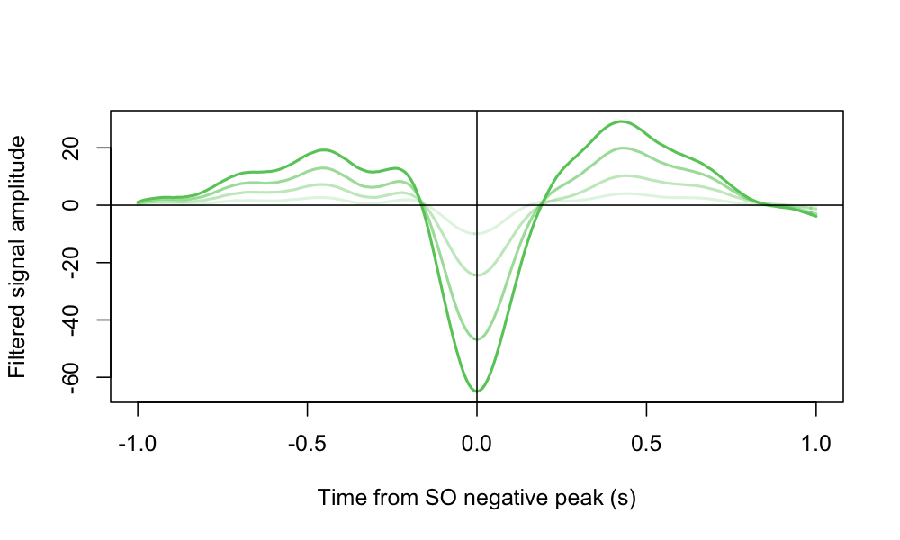
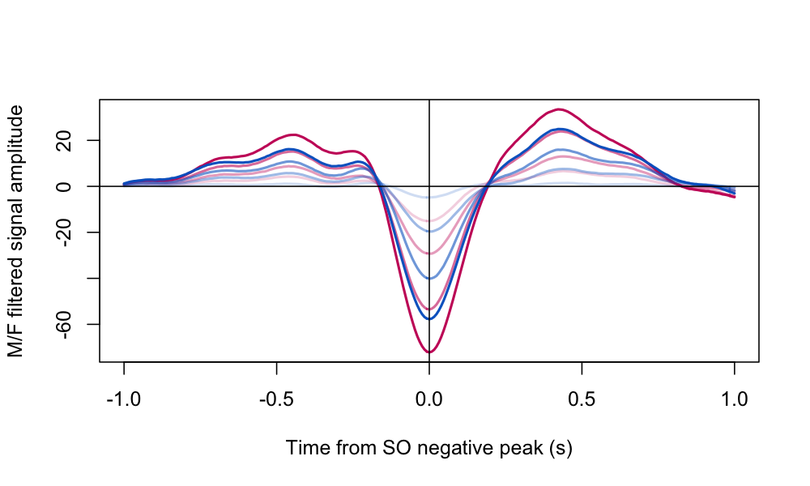
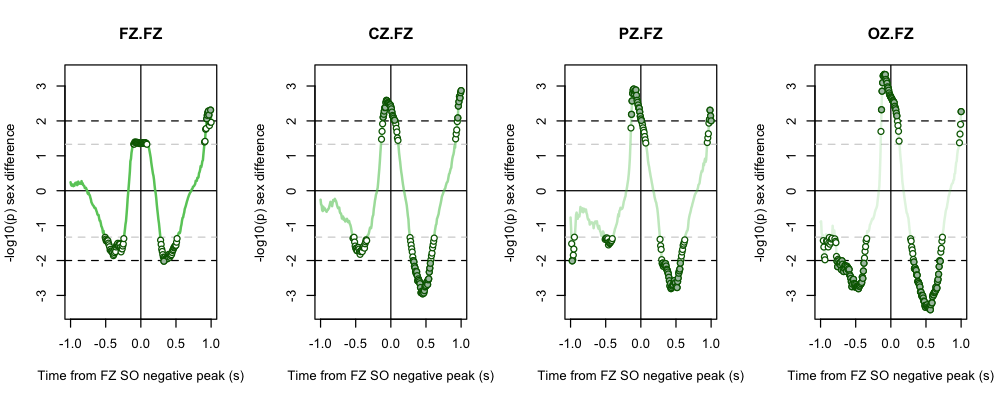
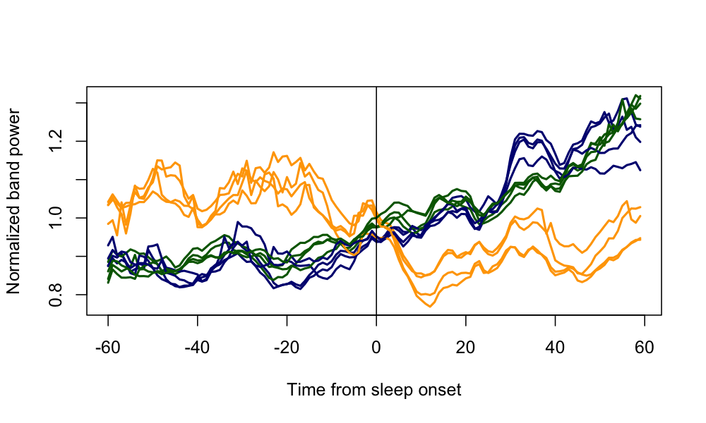

5.9. Peri-event statistics
In this section we'll use the
TLOCK
command in combination with Luna's cache and annotation mechanisms, to generate
and summarize time-locked, peri-event metrics in two contexts:
-
slow oscillation (SO) morphology, based on the filtered EEG trace time-locked to SO negative peaks
-
EEG power dynamics around sleep onset
The approaches described below are generic and can be applied (and modified) to address a wide range of questions.
Slow oscillation morphology
First, we'll look at SO morphology: in particular, we'll detect SO at the FZ channel, and then generate time-locked averaged waveforms around FZ-SO negative peaks (+/- 1 second), for FZ but also for three other midline channels:
luna c.lst -o out/slowosc.db \
-s ' ${s1=FZ}
${s2=FZ,CZ,PZ,OZ}
MASK ifnot=N2,N3 & RE
CHEP-MASK sig=${s2} ep-th=3,3
CHEP epochs & RE
SO sig=${s1} cache-neg=c1 mag=2 f-lwr=0.5 f-upr=4 t-lwr=0.5 t-upr=2
FILTER sig=${s2} bandpass=0.5,4 tw=0.3 ripple=0.01
TLOCK sig=${s2} cache=c1 w=1 '
Reviewing the script line-by-line:
-
we use the variable
${s1}to designate which channel(s) to detect SO at (i.e. the seeds for the subsequent time-locked summaries; here we use a single channel to speed up processing, but there could be multiple channels here too) -
we set the variable
${s2}to the other channels we want to generate averaged waveforms for (where the synchronizing event will be a SO peak that may have been detected at another channel) -
we restrict the analysis to N2 and N3 epochs only with
MASK/RE -
we remove epochs with likely extreme artifact (at any of the four
${s2}channels) -
we detect SO at
${s1}using a relative amplitude criterion (mag=2) and use a built-in option to cache the positions (sample indexes) of negative peaks (cache-neg=c1), calling the cachec1; the cache is a mechanism that lets different Luna commands to "speak" to each other -
we then band-pass filter the
${s2}signals, using a similar band (0.5 - 4 Hz) as in SO detection -
finally, we generate averaged waveforms (i.e. per channel/individual, averaged over all SO events detected at the seed channel), requesting a window of one second (
w=1)
TLOCK options
The TLOCK command has various other options,
e.g. for normalization within windows, or for restricting analyses
only to seeds (stored in the cache) that are associated with
the same channel (by adding same-channel). For example, if we
detected SO at four channels instead of one using the code above,
TLOCK would output 16 waveforms (all pairs); with same-channel
it would only output four. The ability to look at cross-channel
peri-event statistics can be useful, e.g. for multi-modal analyses
of PSG data, or to look at how waves propagate spatially, etc.
We'll extract the waveforms to a text file (res/slowosc.1), actually
requesting the median (MD) rather than the mean here (as this is
typically more robust to outliers):
destrat out/slowosc.db +TLOCK -r sCH SEC CH -v MD > res/slowosc.1
We'll then read that file into R for visualization:
d <- read.table("res/slowosc.1",header=T,stringsAsFactors=F)
head(d)
ID CH SEC sCH MD
1 F01 FZ -1.000000 FZ 3.522898
2 F01 FZ -0.992188 FZ 4.093180
3 F01 FZ -0.984375 FZ 4.612769
4 F01 FZ -0.976562 FZ 4.625442
5 F01 FZ -0.968750 FZ 4.403666
6 F01 FZ -0.960938 FZ 4.568414
...
As seen above, this file contains one row for each
individual/channel/SO for each sample point in the window. The MD is
the median value of the waveform for channel CH. The additional sCH is the
channel at which the SO (seed event) was detected. Therefore, given how we specified ${s1}
and ${s2}, we have four combinations of CH and sCH here:
table( d$CH , d$sCH )
FZ
CZ 5140
FZ 5140
OZ 5140
PZ 5140
The 5140 observations per condition reflect the 1-second window around each point (i.e, 1 + 128 * 2 = 257, given a sampling rate of 128 Hz) for 20 individuals (i.e. 20 * 257 = 5140).
We'll take the mean over individuals, requesting a table of means (the within-person median) for window samples (257 rows) by channels (4 columns); in the second step, we order the columns as FZ, CZ, PZ and OZ (rather than alphabetically - naturally, there are more systematic ways to do this rather than hard-coding the values here that one would want to use in practice):
res <- as.data.frame( tapply( d$MD , list( d$SEC , d$CH ) , mean ) )
res <- res[, c(2,1,4,3) ]
The resulting table is as follows:
head( res )
FZ CZ PZ OZ
-1 1.071660 0.8729005 0.4579403 0.2566643
-0.992188 1.387738 1.0972374 0.6263379 0.2729892
-0.984375 1.718401 1.3466110 0.7455648 0.3643809
-0.976562 1.944284 1.4922659 0.9152277 0.3915292
-0.96875 2.101176 1.6374637 1.0336858 0.4497837
-0.960938 2.248765 1.7776731 1.1124792 0.4866229
We can plot it, using a color palette whereby the seed channel (FZ) has the darkest shade, and more distal channels from FZ have progressively lighter shades:
tx <- unique( d$SEC )
pal <- rgb( 100, 200 , 100 , c(250,150,100,50) , max=255 )
ylim = range( res )
plot( tx , res[,1] , type="n" , , ylim = ylim
xlab="Time from SO negative peak (s)" ,
ylab="Filtered signal amplitude" )
for (i in 1:4)
lines( tx , res[,i] , lwd=2 , col = pal[i] )
abline(h=0,v=0)

That is, for FZ we see the typical (whole-sample) SO morphology, based on time-locking at the negative peak (also given the relative amplitude criterion used). The average traces at other channels are not flat but do show attenuated waves, i.e. reflecting the average extent of global vs local SO as well as the (averaged) propagation over time and space. (Note: this is obviously different from looking at the propagation of individual SO events.)
Sex differences
As well as looking at whole-sample average waveforms, one could easily look at group differences in this dataset. We'll merge in demographic data:
phe <- read.table( "work/data/aux/master.txt",header=T,stringsAsFactors=F)
d <- merge( d , phe , by="ID" )
dm and df):
dm <- d[ d$male == 1 , ]
df <- d[ d$male == 0 , ]
res.m <- as.data.frame( tapply( dm$MD , list( dm$SEC , dm$CH ) , mean ) )
res.f <- as.data.frame( tapply( df$MD , list( df$SEC , df$CH ) , mean ) )
res.m <- res.m[, c(2,1,4,3) ]
res.f <- res.f[, c(2,1,4,3) ]
pal.f <- rgb( 200, 0 , 100 , c(250,150,100,50) , max=255 )
pal.m <- rgb( 0, 100 , 200 , c(250,150,100,50) , max=255 )
ylim = range( res.m, res.f )
plot( tx , res.f[,1] , type="n" , ylim = ylim ,
xlab="Time from SO negative peak (s)" ,
ylab="M/F filtered signal amplitude" )
for (i in 1:4) {
lines( tx , res.f[,i] , lwd=2 , col = pal.f[i] )
lines( tx , res.m[,i] , lwd=2 , col = pal.m[i] )
}
abline(h=0,v=0)

From the plot above, SO for males (blues) appear to be generally of lower amplitude than for females, in the absolute amplitude of the negative peak. We can attempt to formalize this observation by testing for statistically significant differences. We'll first define a helper function to return the log10-scaled signed p-value for a sex difference, from a linear regression of the dependent variable on sex and age:
f1 <- function(x) {
m <- summary(lm( x ~ male + age , data = phe ) )
sign( coef(m)[2,1] ) * -log10( m$coef[2,4] )
}
We'll then applying this function f1() to the dataset, for all 257 sample points for each channel combination:
res <- as.data.frame( tapply( d$MD , list( d$SEC , d$CH , d$sCH ) , f1 ) )
The res table contains all results, with
head(res)
CZ.FZ FZ.FZ OZ.FZ PZ.FZ
-1 -0.2575600 0.2426469 -0.9014683 -0.7682403
-0.992188 -0.3974117 0.1703103 -0.8772746 -1.0869878
-0.984375 -0.4142547 0.1446481 -1.2098536 -1.5188755
-0.976562 -0.5608471 0.1778370 -1.2885396 -2.0105747
-0.96875 -0.5828373 0.1788817 -1.2701179 -1.9791697
-0.960938 -0.4579240 0.1306156 -1.4289485 -1.8454957
...
As above, we'll re-order columns to be FZ,CZ,PZ and OZ:
res <- res[,c(2,1,4,3)]
We can then plot these statistics, adding in visual markers for results that have nominal P < 0.05 ( |log10(0.05)| = 1.33 ) and P < 0.01 ( |log10(0.01)| = 2 ); for clarity, we'll make these four plots separate rather than overlaid too:
ylim = range( res )
tx <- unique( d$SEC )
chs <- names(res)
par(mfcol=c(1,4))
for (i in 1:4) {
plot( tx , res[,1] , type="n" , ylim = ylim ,
xlab="Time from FZ SO negative peak (s)" ,
ylab="-log10(p) sex difference" ,
main = chs[i] )
abline(h=0,v=0)
abline(h=c(-2,2),lty=2)
abline(h=c(-1.33,1.33),lty=2,col="lightgray")
lines( tx , res[,i] , lwd=2 , col = pal[i] )
points( tx[ abs(res[,i])>1.33 ] , res[abs(res[,i])>1.33 ,i] ,
pch=21 , col = "darkgreen", bg="white")
points( tx[abs(res[,i])>2 ] , res[abs(res[,i])>2 ,i] ,
col = "darkgreen", pch=21 , bg= "#abc3b0" )
}

That is, there appear to be nominally significant differences in the amplitude of slow oscillations: as positive means "higher in males" given the above framing, this implies attenuated negative and positive SO peaks in males versus females; further, the effect is more evident at parietal and occipital channels, perhaps reflecting either a restriction of range in the events (selected) at FZ, and/or sex differences in the extent to which SO are more global versus more local.
Stage transitions
Changing gears to look at EEG dynamics around sleep onset in a very simple way, here we'll introduce the generic epoch feature of Luna. This allows epochs to be specified based on one or more (possibly manipulated) annotations, rather than fixed time intervals. Here's the code, which we'll break down line-by-line below:
luna c.lst -o out/trans.db \
-s ' ${s=FZ,CZ,PZ,OZ}
HYPNO annot &
HILBERT sig=${s} f=0.5,4 tag=delta tw=0.5 ripple=0.01
HILBERT sig=${s} f=4,8 tag=theta tw=0.5 ripple=0.01
HILBERT sig=${s} f=10,15 tag=sigma tw=0.5 ripple=0.01
${v=[${s}][_delta,_theta,_sigma]}
${v=[${v}][_ht_mag]}
MOVING-AVERAGE sig=${v} hw=5
RESAMPLE sig=${v} sr=1
EPOCH annot=h_t2_sleep_onset w=60
TLOCK epoch sig=${v} np=0.5 '
-
this analysis is restricted to four midline channels, for simplicity/to speed things up, assigned to the
${s}variable -
we apply the
HYPNOcommand adding theannotoption to make Luna attach hypnogram-based annotations to the dataset, as described here -
we then use the
HILBERTcommand to apply the filter-Hilbert transform to each channel, for three frequency bands (slow/delta, theta and sigma, set here asf=0.5,4,f=4,8andf=10,15); these commands generate new channels with the instantaneous amplitude (envelope) in the attached EDF, adding thetagvalue and_ht_magto each new channel label, e.g.FZ_delta_ht_magis the envelope for FZ delta power -
we now have 12 new channels added to the in-memory EDF (three envelopes for each of four channels); to work with these effectively, we use some Luna syntax to make an expanded list: anything in the form
[a,b,c][1,2]is expanded intoa1,b1,c1,a2,b2,c2, for example. -
that is, taking
${s}we first append the band tags (i.e.FZ_delta,FZ_sigma, etc) and store this in${v} -
we then append
_ht_magto each of the twelve labels in${v} -
using the new
${v}set of signals, we smooth the amplitudes withMOVING-AVERAGE -
for easier plotting, we then resample the instantaneous amplitudes to 1 Hz
-
we then defined epochs based on the previously attached
h_t2_sleep_onsetannotation, which is a 0-duration marker that represents the start of the first sleep epoch; we add a window (+/- 1-minute) around the point, i.e. to span four traditional 30-second epochs, centered around sleep onset -
finally, we run
TLOCKbut indicating that the intervals to be extracted at based on the present epochs (here will be just one per person, so now averaging is involved in this particular case), rather than looking to a cache (as in the example above); we also add thenp=0.5to effectively normalize each trace to have similar means (of 1), as we're interested here in relative change within each band -
in other words, this just conveniently extracts and normalizes the power values around sleep onset (as defined by the 30-second traditional staging, at least);
As above, we'll extract the outputs to the file res/trans.1:
destrat out/trans.db +TLOCK -r SEC CH -v MD > res/trans.1
In R, we'll load this file
library(luna)
d <- read.table("res/trans.1",header=T,stringsAsFactors=F)
res <- tapply( outliers( d$MD ) , list( d$SEC , d$CH ) , mean , na.rm=T )
colnames(res)
"CZ_delta_ht_mag" "CZ_sigma_ht_mag" "CZ_theta_ht_mag"
"FZ_delta_ht_mag" "FZ_sigma_ht_mag" "FZ_theta_ht_mag"
"OZ_delta_ht_mag" "OZ_sigma_ht_mag" "OZ_theta_ht_mag"
"PZ_delta_ht_mag" "PZ_sigma_ht_mag" "PZ_theta_ht_mag"
That is, res is a matrix of 120 rows (a 120 second window at 1 Hz) by 12 columns (the three band powers for the four channels),
where each cell is the mean over all 20 individuals.
Plotting these means (assigning similar colors to the different channels, coloring delta, theta and sigma as navy, darkgreen and orange respectively):
pal <- rep( c( "navy" , "orange" , "darkgreen" ) , 4 )
tx <- unique( d$SEC ) - 60
plot( tx , res[,1] , type="n" , ylim = range( res ) ,
xlab = "Time from sleep onset" ,
ylab="Normalized band power" )
for (i in 1:12)
lines( tx , res[,i] , lwd=2 , col = pal[i] )
abline(v=0)

Given the small sample there are some inevitable arbitrary/random fluctuations (e.g. around +30 seconds) reflecting outliers, but otherwise we see a clear trend in which faster frequencies (sigma) are muted and slower frequencies progressively increase in power across the first couple of epochs of sleep onset. (Note: Naturally, this is not presented as an optimal way to study the sleep onset process: rather the goal here -- as with the entirety of this walkthrough -- is to showcase various Luna commands in a semi-realistic context.)
Summary
Here we've seen how to generate different forms of time-locked summaries, based either on cached time-points or annotations. In the latter example, annotations were generated from the HYPNO command to reflect sleep onset, but they could of course be anything, attached via an external .annot file, etc. Luna also supports peri-event spectral analysis as well as simple signal-averaging, but that is beyond the scope of this walkthrough.
In the final section we'll consider methods for interval-based analyses.